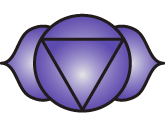
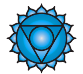
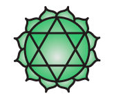
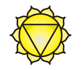
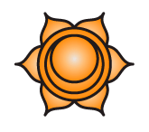
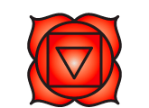

| Sahasrara is generally considered to be the chakra of pure consciousness. Its role may be envisioned somewhat similarly to that of the pituitary gland, which secretes emanuel hormones to communicate to the rest of the endocrine system and also connects to the central nervous system via the hypothalamus. The thalamus is thought to have a key role in the physical basis of consciousness. Symbolized by a lotus with one thousand petals, it is located at the crown of the head. Sahasrara is represented by the colour violet and it involves such issues as inner wisdom and the death of the body. Sahasrara's inner aspect deals with the release of karma, physical action with meditation, mental action with universal consciousness and unity, and emotional action with "beingness".[31] |
|
 |
Ajna (along with Bindu,
is also known as the third
eye chakra) is
linked to the pineal
gland which may inform a
model of its envisioning. The pineal gland is a light sensitive gland
that produces the hormone melatonin which
regulates sleep and waking up. Ajna is symbolised by a lotus with two
petals, and corresponds to the colour white, indigo or deep blue. Ajna's
key issues involve balancing the higher & lower selves and trusting
inner guidance. Ajna's inner aspect relates to the access of intuition.
Mentally, Ajna deals with visual consciousness. Emotionally, Ajna deals
with clarity on an intuitive level.[32] (Note: some opine that the pineal and pituitary glands should be exchanged in their relationship to the Crown and Brow chakras, based on the description in Arthur Avalon's book on kundalini called Serpent Power or empirical research.) |
|
 |
Vishuddha (also Vishuddhi) may be understood as relating to communication and growth through expression. This chakra is paralleled to the thyroid, a gland that is also in the throat and which produces thyroid hormone, responsible for growth and maturation. Symbolised by a lotus with sixteen petals. Vishudda is characterized by the colour light or pale blue, or turquoise. It governs such issues as self-expression and communication, as discussed above. Physically, Vishuddha governs communication, emotionally it governs independence, mentally it governs fluent thought, and spiritually, it governs a sense of security.[33] |
|
 |
Anahata, or Anahata-puri, or padma-sundara is related to the thymus, located in the chest. The thymus is an element of theimmune system as well as being part of the endocrine system. It is the site of maturation of the T cells responsible for fending off disease and may be adversely affected by stress. Anahata is symbolised by a lotus flower with twelve petals. (See alsoheartmind). Anahata is related to the colours green or pink. Key issues involving Anahata involve complex emotions, compassion, tenderness, unconditional love, equilibrium, rejection and well-being. Physically Anahata governs circulation, emotionally it governs unconditional love for the self and others, mentally it governs passion, and spiritually it governs devotion.[34] |
|
 |
Manipura or manipuraka is related to the metabolic and digestive systems. Manipura is believed to correspond to Islets of Langerhans,[35] which are groups of cells in the pancreas, as well as the outer adrenal glands and the adrenal cortex. These play a valuable role in digestion, the conversion of food matter into energy for the body. Symbolised by a lotus with ten petals. The colour that corresponds to Manipura is yellow. Key issues governed by Manipura are issues of personal power, fear, anxiety, opinion-formation, introversion, and transition from simple or base emotions to complex. Physically, Manipura governs digestion, mentally it governs personal power, emotionally it governs expansiveness, and spiritually, all matters of growth.[36] |
|
 |
Swadhisthana, Svadisthana or adhishthana is located in the sacrum (hence the name) and is considered to correspond to the testes or the ovaries that produce the various sex hormones involved in the reproductive cycle. Svadisthana is also considered to be related to, more generally, the genitourinary system and the adrenals. The Sacral Chakra is symbolized by a lotus with six petals, and corresponds to the colour orange. The key issues involving Svadisthana are relationships, violence, addictions, basic emotional needs, and pleasure. Physically, Svadisthana governs reproduction, mentally it governs creativity, emotionally it governs joy, and spiritually it governs enthusiasm.[37] |
|
 |
Muladhara or root chakra is
related to instinct, security, survival and also to basic human
potentiality. This centre is located in the region between the genitals
and the anus. Although no endocrine organ is placed here, it is said to
relate to the gonads and the adrenal medulla, responsible for the fight-or-flight
response when survival is
under threat. There is a muscle located in this region that controls
ejaculation in the sexual act of the human male. A parallel is charted
between the sperm
cell and the ovumwhere
the genetic
code lies coiled and the kundalini.
Muladhara is symbolized by a lotus with four petals and the colour red.
Key issues involve sexuality, lust and obsession. Physically, Muladhara
governs sexuality, mentally it governs stability, emotionally it governs
sensuality, and spiritually it governs a sense of security.[38] Woodroffe also describes 7 head chakras (including Ajna and Sahasrara) in his other Indian text sources. Lowest to highest they are: Talu/Talana/Lalana, Ajna, Manas, Soma, Brahmarandra, Sri (inside Sahasrara), Sahasrara. |